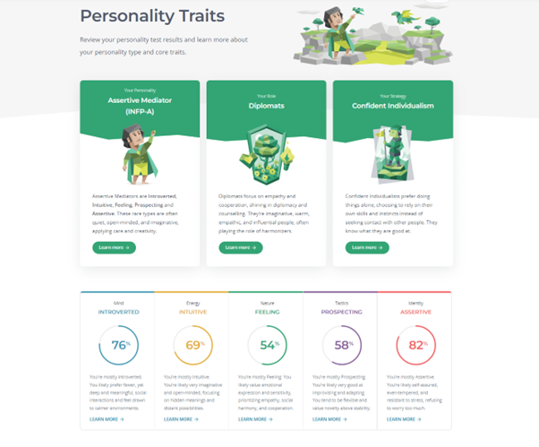
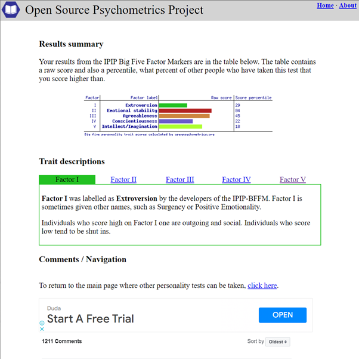

My Myers and Briggs test results:

Big 5 factors test results:

Also learnig style test result:

Having done the same test year ago I can see that they do indicate the type of personality quite well. Year 2021 I was Assertive Logician, prospected introverted thinker (INTP-A) which is in very similar range with 2022 results (INFP-A), but this year I have grown on the “Feelings” scale. I like to learn things by doing them - that agrees with being a tactile learner definition. What is surprising is that I am not so good in Auditory learning, more of a visual type. That might explain why listening hours of audiobooks is not really the same with reading a paper back copy. IPIP Big Five Factor Markers indicate being more drawn to the introversion (29%) with high (84%) of emotional stability. Score on agreeableness conscientiousness indicates being more impulsive and disorganised that I can agree as well. While forming a team a personality types should be taken account. Certain types work better together, and some might be prone to conflicts. Those test results should be taken with a grain of salt, but they do indicate which way does the personality lean to. Me being more of a disorganised introvert means that a team work should have a solid structure with all the roles made clear.
back to main page